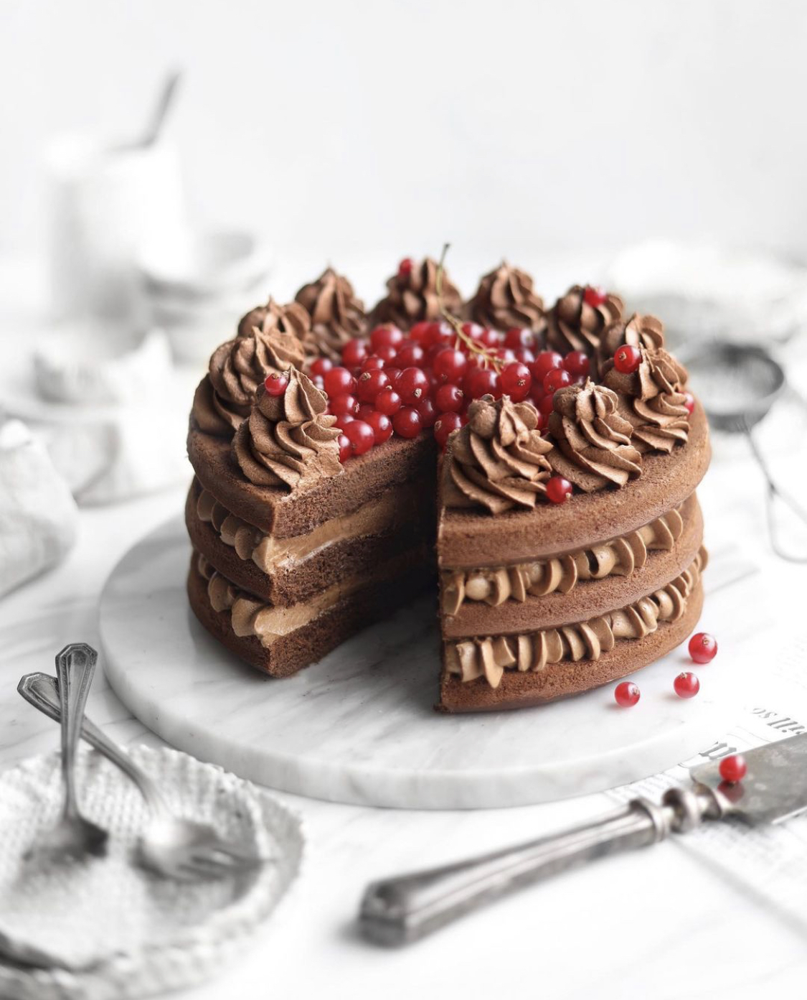
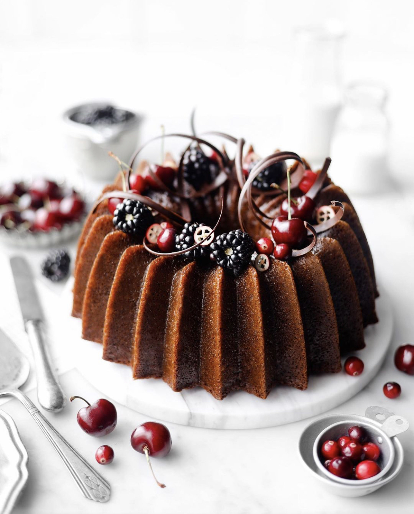
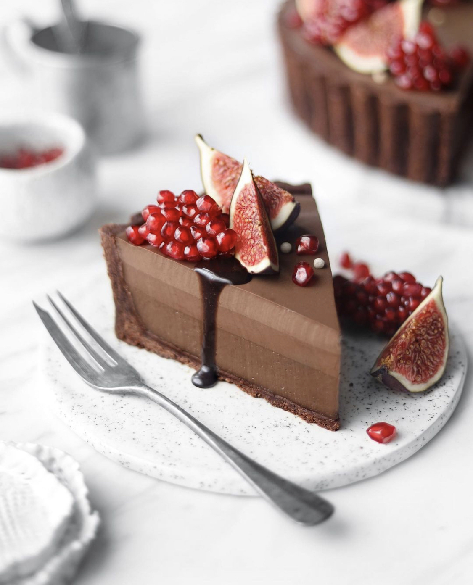
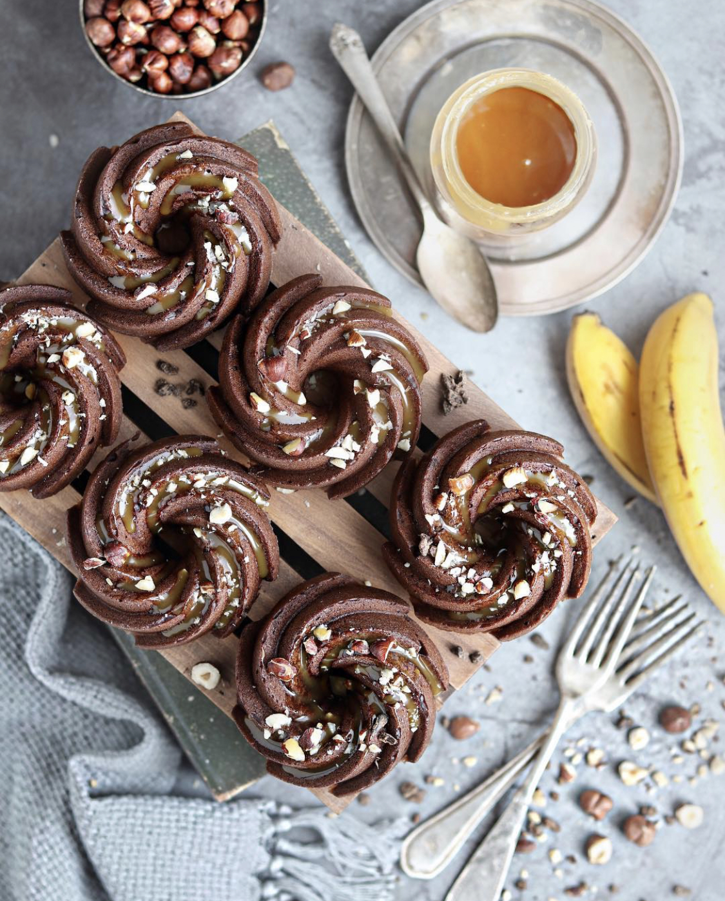
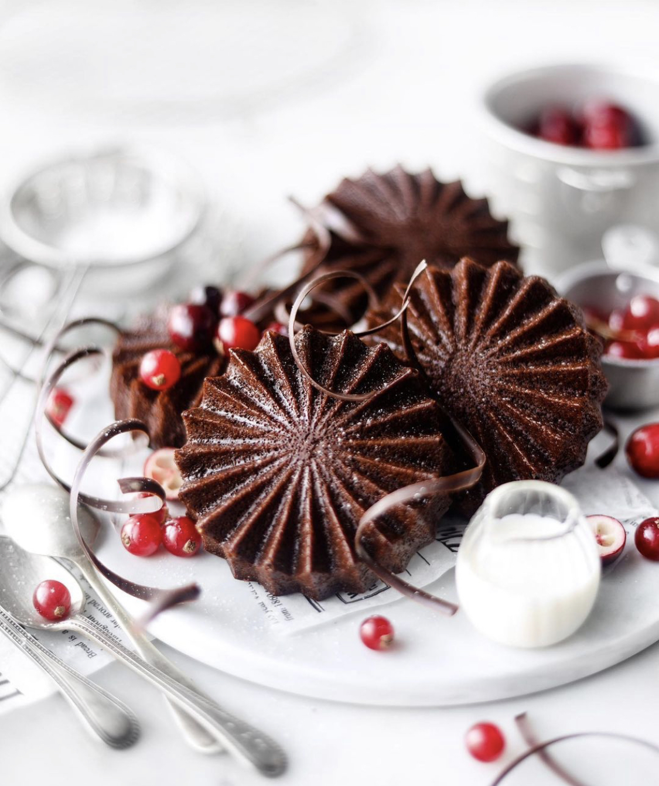
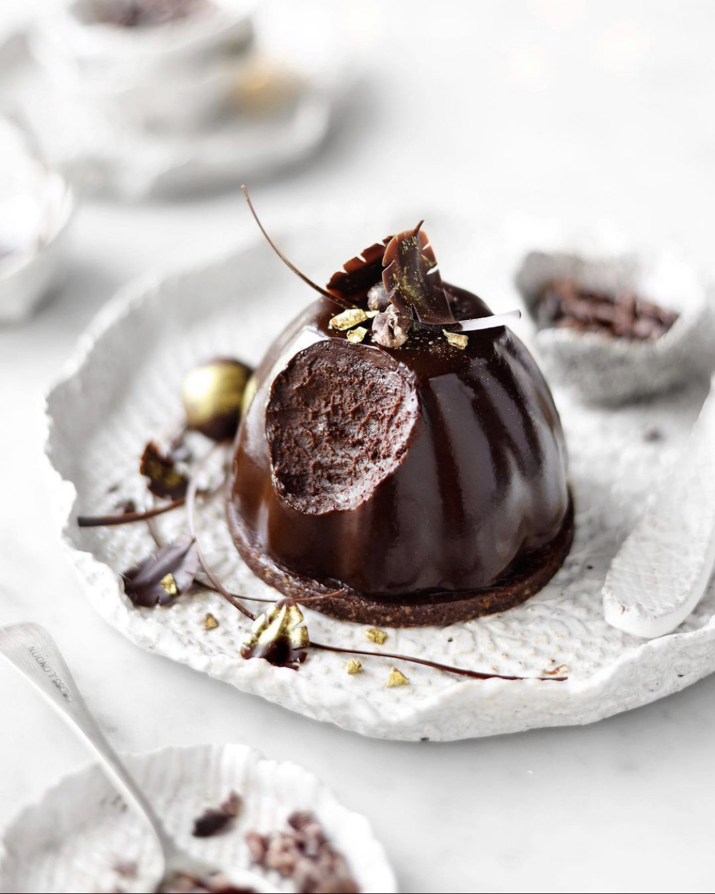
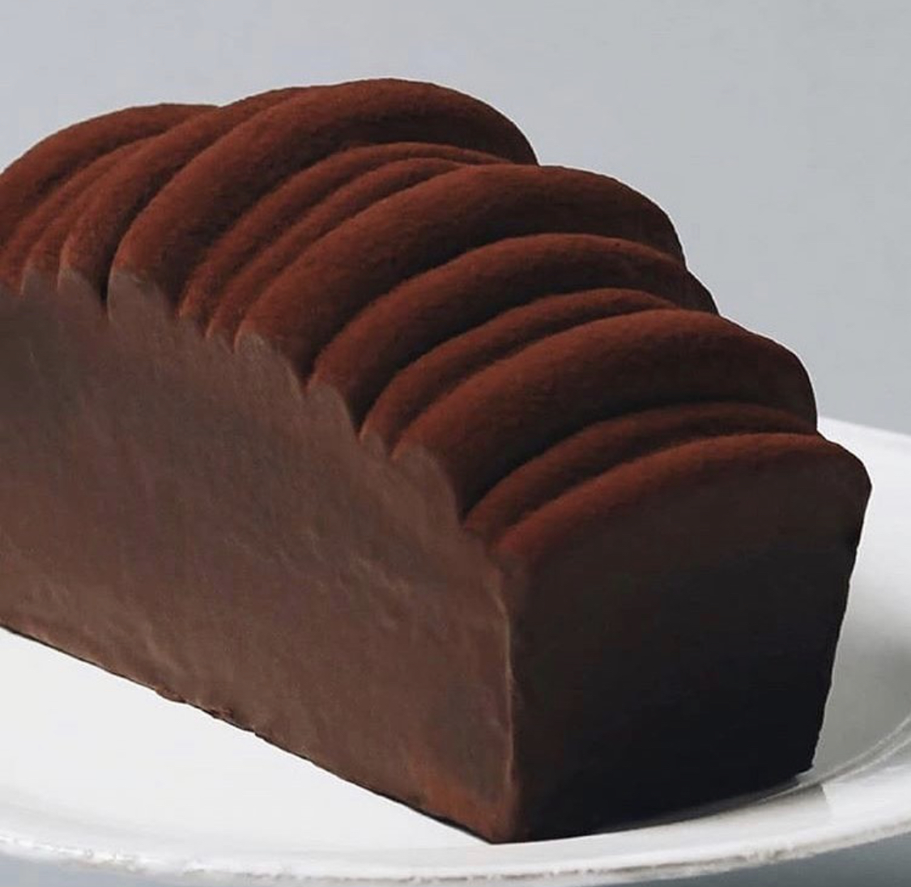

CHOCOLAT LAYER CAKE

BUNDT CAKE

FUDJE FLAN TART

CHOCOLAT BANANA CAKE

CHOCOLAT CAKE

CHEESE CAKES

Gateau au CHOCOLAT
- 150 g de chocolat pâtissier
- 3 oeufs
- 100 g de sucre en poudre
- 60 g de farine
- 1 cuillère à café de levure
- 80 g de beurre
- 50 g de poudre d’amande
- Faire fondre le chocolat (en morceaux) au bain-marie avec 5 cuillères à soupe d’eau (ou le faire au micro-ondes)
- Dans un saladier, battre les oeufs avec le sucre, jusqu’à ce que le mélange blanchisse.
Ajouter la farine, la levure, le beurre fondu, la poudre d’amandes, et le chocolat. Mélanger - Verser la préparation jusqu’à mi–hauteur d’un moule à cake beurré.
- Mettre à cuire dans un four préchauffé à 180°C (thermostat 6 ) pendant 30 à 35 min
- puis cuire 60 min à thermostat 3 ou 4 (120°C), en enfournant à four froid.Décorer selon vos désir
- )Attendre 5 min avant de démouler. Laisser refroidir